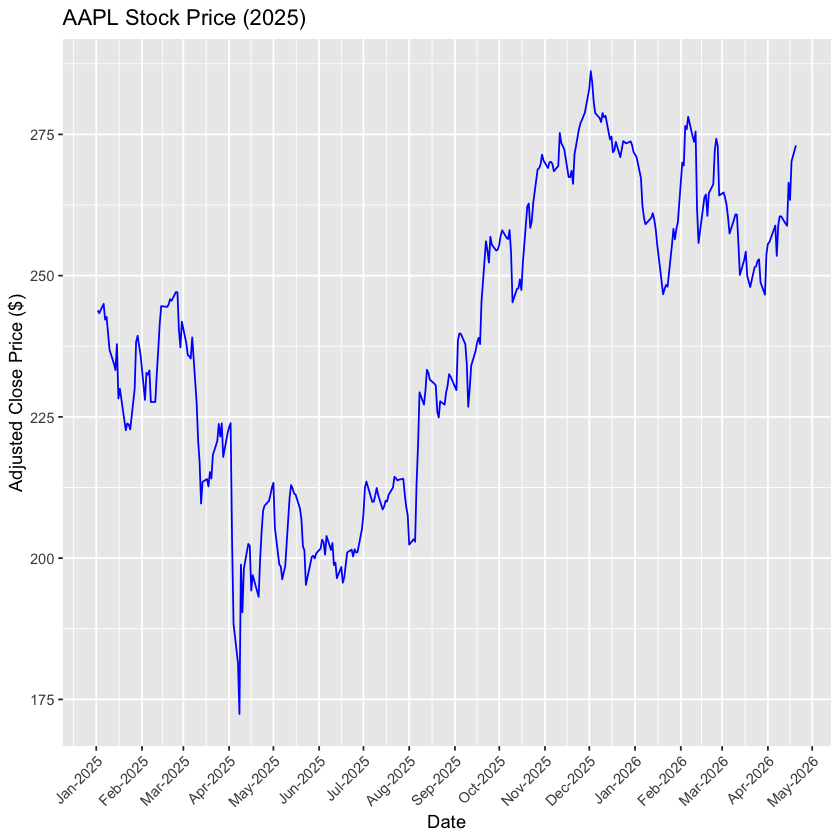
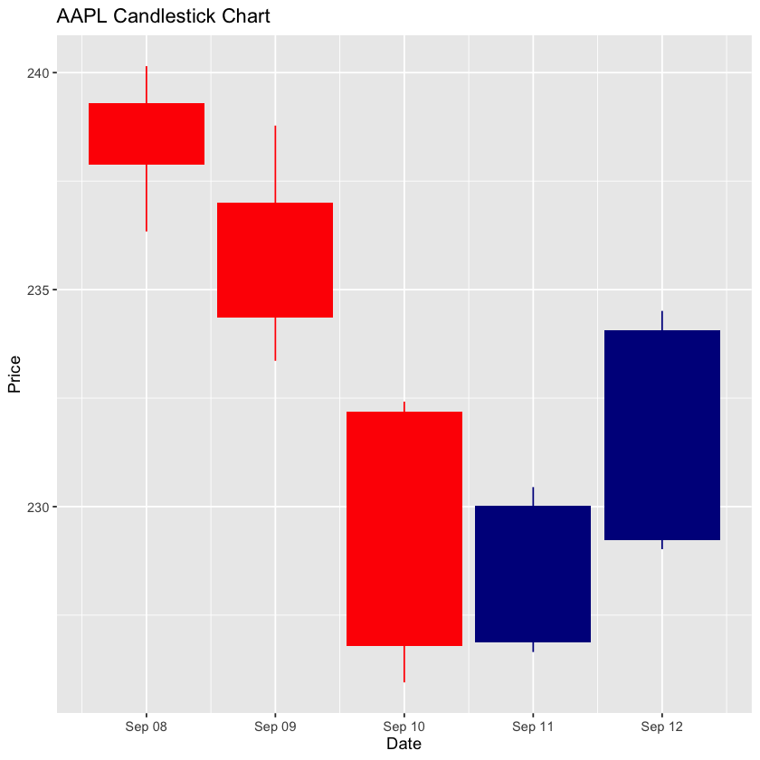
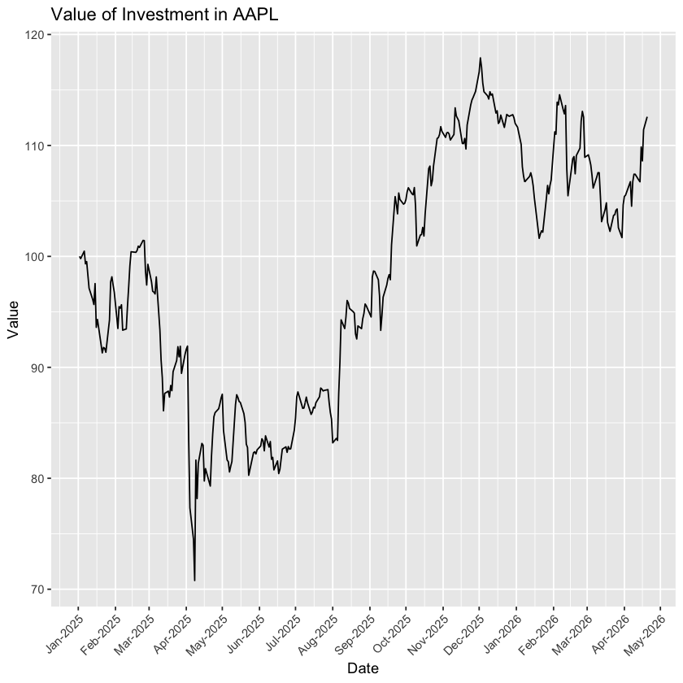

Topic 5.3 - 时间序列数据¶
1. 时间序列数据的定义¶
时间序列数据是对单一主体或实体在连续时间间隔下所收集的一系列观测值
- 通常这个时间间隔是固定等间距的，例如每天、每周、每月、每季度、每年等
- 时间序列数据呈现了某一主体或实体随时间变化的轨迹
2. 时间序列数据中的时间处理¶
时间序列中一个十分重要的特点是对时间的处理：
-
在不同的数据集中，大家可能会看到多种多样的时间记录方式，例如：
- December 31, 2024
- 2024-12-31
- 12/31/2024
- 31/12/2024
- 2024-12-31 16:00:00
- 2024-12-31 4:00:00 PM
- 2024-12-31 UTC
- 2024-12-31 AEST
- 2024-12-31 AEDT
-
这当中考虑了时间日期的：
- 格式
- 精度：具体到日，还是具体到秒等
- 时区与夏冬令时
-
如何将不同类型的时间记录转换成我们需要的格式，是时间序列数据整理中一个重要的步骤
如果时间处理不当，很可能会导致数据分析结果出现问题：
-
比方说，我们有两个数据集：
- 一个记录了澳洲 ASX 200 指数成分股的价格数据
- 一个记录了美国 S&P 500 指数成分股的价格数据
-
虽然两个数据集都记录着
2024-12-31 15:00:00的价格数据，但由于时区的不同，实际上这两个时间点并不相同：- 对于 ASX 200 来说，
2024-12-31 15:00:00是澳洲东部夏令时（AEDT）的时间，换算成协调世界时（UTC）是2024-12-31 04:00:00 - 对于 S&P 500 来说，
2024-12-31 15:00:00是美国东部标准时间（EST）的时间，换算成协调世界时（UTC）是2024-12-31 20:00:00
- 对于 ASX 200 来说，
-
如果不进行这样的转换，很有可能错误地分析出，澳洲某只股票和美国某只股票有很强的相关性，但实际上它们的价格数据记录在不同的时间点上，这个相关性是不存在的
在 R 语言中，我们主要使用 lubridate 包来处理时间数据，我们在接下来的小节中来介绍一下这个包的使用方法。
3. 时间序列数据的获取¶
首先，我们在 R 中先导我们要使用的时间序列数据：
-
我们要使用的就是 AAPL 这只股票的时间序列数据：
-
这里，我们使用
quantmod包来获取 AAPL 的时间序列数据，这个包是从网站上下载金融数据的一个包：
library(tidyverse)
library(lubridate)
library(quantmod)
getSymbols("AAPL",
src = "yahoo",
from = as.Date("2025-01-01")
)
[1] "AAPL"
-
注意，
getSymbols()不需要赋值给一个变量- 它会自动将数据存储在一个以股票代码命名的变量中
- 比方说这里，股票数据就存储到了它输出的
AAPL这个变量中：
AAPL
AAPL.Open AAPL.High AAPL.Low AAPL.Close AAPL.Volume AAPL.Adjusted
2025-01-02 248.93 249.10 241.82 243.85 55740700 242.5252
2025-01-03 243.36 244.18 241.89 243.36 40244100 242.0378
2025-01-06 244.31 247.33 243.20 245.00 45045600 243.6689
2025-01-07 242.98 245.55 241.35 242.21 40856000 240.8941
2025-01-08 241.92 243.71 240.05 242.70 37628900 241.3814
... ... ... ... ... ... ...
2026-04-14 259.25 261.93 257.19 258.83 48370700 258.8300
2026-04-15 258.16 266.56 257.81 266.43 49913500 266.4300
2026-04-16 266.80 267.16 261.27 263.40 43323100 263.4000
2026-04-17 266.96 272.30 266.72 270.23 61436200 270.2300
2026-04-20 270.33 274.28 270.29 273.05 36472700 273.0500
-
这里，我们使用
quantmod包获取的时间序列数据是一个xts对象：- 这种数据类型的特征是，它的行索引是时间，而不是数字
- 并且，我们之前学的一些
tidyverse包中的数据处理方法，是无法直接应用在xts对象上的
class(AAPL)
[1] "xts" "zoo"
我们可以将这个数据转换成一个 tibble，并且对列名进行一些处理：
- 这里我们使用了
rename_with()函数来对列名进行处理，这个函数的作用是，对每一个列名应用一个函数来进行转换 -
在这里，我们使用了一个匿名函数
~ sub("AAPL\\.", "", .x)来去掉列名中的 "AAPL." 前缀~符号表示这是一个匿名函数，它的输入参数是.x，代表当前列名的值sub()函数的作用是，在字符串中进行替换，这里我们将 "AAPL." 替换成了一个空字符串 """AAPL\\."中的\\.是因为在正则表达式中，点号.是一个特殊字符，表示匹配任意一个字符，所以我们需要使用\\.来表示我们要匹配的是一个真正的点号
aapl_tbl <- as_tibble(AAPL, rownames = "date") |>
rename_with(~ sub("AAPL\\.", "", .x)) |>
mutate(date = as.Date(date))
aapl_tbl
| date <date> | Open <dbl> | High <dbl> | Low <dbl> | Close <dbl> | Volume <dbl> | Adjusted <dbl> |
|-------------|------------|------------|-----------|-------------|--------------|----------------|
| 2025-01-02 | 248.93 | 249.10 | 241.82 | 243.85 | 55740700 | 242.5252 |
| 2025-01-03 | 243.36 | 244.18 | 241.89 | 243.36 | 40244100 | 242.0378 |
| 2025-01-06 | 244.31 | 247.33 | 243.20 | 245.00 | 45045600 | 243.6689 |
| 2025-01-07 | 242.98 | 245.55 | 241.35 | 242.21 | 40856000 | 240.8941 |
| 2025-01-08 | 241.92 | 243.71 | 240.05 | 242.70 | 37628900 | 241.3814 |
| ... | ... | ... | ... | ... | ... | ... |
| 2026-04-14 | 259.25 | 261.93 | 257.19 | 258.83 | 48370700 | 258.83 |
| 2026-04-15 | 258.16 | 266.56 | 257.81 | 266.43 | 49913500 | 266.43 |
| 2026-04-16 | 266.80 | 267.16 | 261.27 | 263.40 | 43323100 | 263.40 |
| 2026-04-17 | 266.96 | 272.30 | 266.72 | 270.23 | 61436200 | 270.23 |
| 2026-04-20 | 270.33 | 274.28 | 270.29 | 273.05 | 36472700 | 273.05 |
之后，我们可以在这个 tibble 上作一些专属于时间序列的图像类型：
- 比方说，我们可以画出 AAPL 的收盘价（Close）随时间变化的折线图：
line_plot <- ggplot(aapl_tbl, aes(x = date, y = Close)) +
geom_line(color = "blue") +
scale_x_date(date_breaks = "1 months", date_labels = "%b-%Y") +
labs(
title = "AAPL Stock Price (2025)",
x = "Date",
y = "Adjusted Close Price ($)"
) +
theme(axis.text.x = element_text(angle = 45, hjust = 1))
line_plot

-
再比方说，我们可以画出 AAPL 的烛式图：
- 烛式图（Candlestick Chart）是一种常用的金融图表类型
-
每个烛台（candlestick）表示一个时间段内的价格变动情况：
- 上影线的顶端表示最高价
- 下影线的底端表示最低价
- 红色柱子表示价格上涨，这时柱子的底端表示开盘价，顶端表示收盘价
- 绿色柱子表示价格下跌，这时柱子的顶端表示开盘价，底端表示收盘价
-
在 R 中，在
ggplot2代码中要想绘制烛式图，我们还需使用tidyquant包中的geom_candlestick()函数
aapl_tbl_sub <- aapl_tbl |>
filter(date>=as.Date("2025-09-08") & date<=as.Date("2025-09-12"))
candle_sticks <- ggplot(aapl_tbl_sub, aes(x = date, open = Open, high = High, low = Low, close = Close)) +
tidyquant::geom_candlestick() +
labs(
title = "AAPL Candlestick Chart",
y = "Price",
x = "Date"
)
candle_sticks

4. 时间序列数据的特殊计算¶
(1) 跨时间步计算¶
时间序列中的一个重要计算就是跨时间步的计算：
-
比方说，我们想计算 AAPL 的日收益率：
- 日收益率的计算公式是：
(今日收盘价 - 昨日收盘价) / 昨日收盘价 - 这个计算需要用到当前时间步和前一个时间步的数据，因此是一个跨时间步的计算
- 日收益率的计算公式是：
-
如果从数据表的角度来说，我们需要将不同行的数据放在一起进行计算
- 并且，在进行跨行计算之前，最重要的一个操作就是先将数据按照时间顺序进行排序
- 这样来确保我们计算的当前行和前一行的数据是正确对应的
-
在 R 中，我们可以使用
dplyr包中的lag()函数来实现这个跨时间步的计算：
aapl_return <- aapl_tbl |>
arrange(date) |>
transmute(
date,
Price = Adjusted,
Price_Lag = lag(Adjusted),
Return = (Adjusted - lag(Adjusted)) / lag(Adjusted)
)
aapl_return
| date <date> | Price <dbl> | Price_Lag <dbl> | Return <dbl> |
|-------------|-------------|-----------------|--------------|
| 2025-01-02 | 242.5252 | NA | NA |
| 2025-01-03 | 242.0378 | 242.5252 | -0.002009484 |
| 2025-01-06 | 243.6689 | 242.0378 | 0.006739044 |
| 2025-01-07 | 240.8941 | 243.6689 | -0.011387690 |
| 2025-01-08 | 241.3814 | 240.8941 | 0.002022900 |
| ... | ... | ... | ... |
| 2026-04-14 | 258.83 | 259.20 | -0.001427568 |
| 2026-04-15 | 266.43 | 258.83 | 0.02936293 |
| 2026-04-16 | 263.40 | 266.43 | -0.01137259 |
| 2026-04-17 | 270.23 | 263.40 | 0.02593021 |
| 2026-04-20 | 273.05 | 270.23 | 0.01043547 |
这里我们使用了一个新的函数 transmute()：
- 这个函数可以理解为
mutate()和select()的结合体 - 它的作用是，首先根据我们提供的表达式来创建新的变量，然后只保留这些新创建的变量，而丢弃原来的变量
(2) 累计计算¶
在时间序列数据中，另一个重要的计算是累计计算，比方说累加或累乘：
-
比方说，我们想计算 AAPL 的累计收益率：
- 在 t 时间点的累计收益率的计算公式是：
(1 + Return_t) x (1 + Return_t-1) x ... x (1 + Return_1) - 1 - 这个计算需要用到当前时间步和之前所有时间步的数据，因此是一个累计计算
- 在 t 时间点的累计收益率的计算公式是：
-
在 R 中，我们可以使用
dplyr包中的cumprod()函数来实现这个累计计算：
aapl_return_rmna <- aapl_return |>
mutate(
Price_Lag = if_else(is.na(Price_Lag), 0, Price_Lag),
Return = if_else(is.na(Return), 0, Return)
)
aapl_return_rmna
| date <date> | Price <dbl> | Price_Lag <dbl> | Return <dbl> |
|-------------|-------------|-----------------|--------------|
| 2025-01-02 | 242.5252 | 0.0 | 0.000000000 |
| 2025-01-03 | 242.0378 | 242.5252 | -0.002009484 |
| 2025-01-06 | 243.6689 | 242.0378 | 0.006739044 |
| 2025-01-07 | 240.8941 | 243.6689 | -0.011387690 |
| 2025-01-08 | 241.3814 | 240.8941 | 0.002022900 |
| ... | ... | ... | ... |
| 2026-04-14 | 258.83 | 259.20 | -0.001427568 |
| 2026-04-15 | 266.43 | 258.83 | 0.02936293 |
| 2026-04-16 | 263.40 | 266.43 | -0.01137259 |
| 2026-04-17 | 270.23 | 263.40 | 0.02593021 |
| 2026-04-20 | 273.05 | 270.23 | 0.01043547 |
aapl_cumret <- aapl_return_rmna |>
mutate(
Return_Plus_1 = 1 + Return,
Cumret = cumprod(1 + coalesce(Return, 0)) - 1
)
aapl_cumret
| date <date> | Price <dbl> | Price_Lag <dbl> | Return <dbl> | Return_Plus_1 <dbl> | Cumret <dbl> |
|-------------|-------------|-----------------|--------------|---------------------|--------------|
| 2025-01-02 | 242.5252 | 0.0000 | 0.000000000 | 1.000000000 | 0.000000000 |
| 2025-01-03 | 242.0378 | 242.5252 | -0.002009484 | 0.997990516 | -0.002009484 |
| 2025-01-06 | 243.6689 | 242.0378 | 0.006739044 | 1.006739044 | 0.004716018 |
| 2025-01-07 | 240.8941 | 243.6689 | -0.011387690 | 0.988612310 | -0.006725376 |
| 2025-01-08 | 241.3814 | 240.8941 | 0.002022900 | 1.002022900 | -0.004716081 |
| ... | ... | ... | ... | ... | ... |
| 2026-04-14 | 258.83 | 259.20 | -0.001427568 | 0.998572432 | 0.06722942 |
| 2026-04-15 | 266.43 | 258.83 | 0.02936293 | 1.02936293 | 0.09856640 |
| 2026-04-16 | 263.40 | 266.43 | -0.01137259 | 0.98862741 | 0.08607285 |
| 2026-04-17 | 270.23 | 263.40 | 0.02593021 | 1.02593021 | 0.11423495 |
| 2026-04-20 | 273.05 | 270.23 | 0.01043547 | 1.01043547 | 0.12586251 |
在这两段代码中：
-
我们先创建了一个临时表
aapl_return_rmna- 在这个表中，我们将
Price_Lag和Return中的缺失值（NA）替换成了 0 - 这样做的原因是，在计算累积收益率的时候，如果有一个时间点的收益率是 NA，那么之后所有时间点的累积收益率都会变成 NA，这样就无法得到我们想要的结果了
- 在这个表中，我们将
-
在计算累积收益率的时候，我们使用了
coalesce(Return, 0)- 这个函数的作用是，如果
Return中有 NA，就用 0 来替代 - 虽然我们之前已经在
aapl_return_rmna中将Return中的 NA 替换成了 0 - 但在这里我们再次使用
coalesce()，其实是一个双重保险，来确保在计算累积收益率的时候，不会因为 NA 的存在而导致结果出现问题
- 这个函数的作用是，如果
之后，我们将 AAPL 的累积收益率画成折线图：
ggplot(aapl_cumret, aes(x = date, y = 100 * (Cumret + 1))) +
geom_line() +
scale_x_date(date_breaks = "1 months", date_labels = "%b-%Y") +
labs(
title = "Value of Investment in AAPL",
y = "Value",
x = "Date"
) +
theme(axis.text.x = element_text(angle = 45, hjust = 1))
